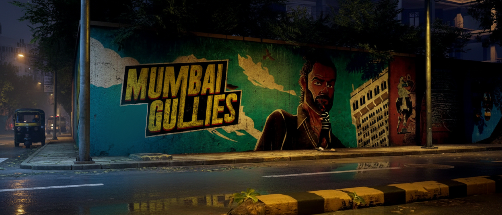
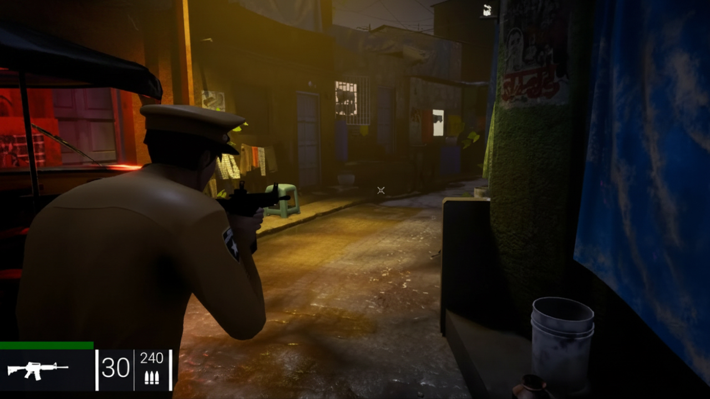
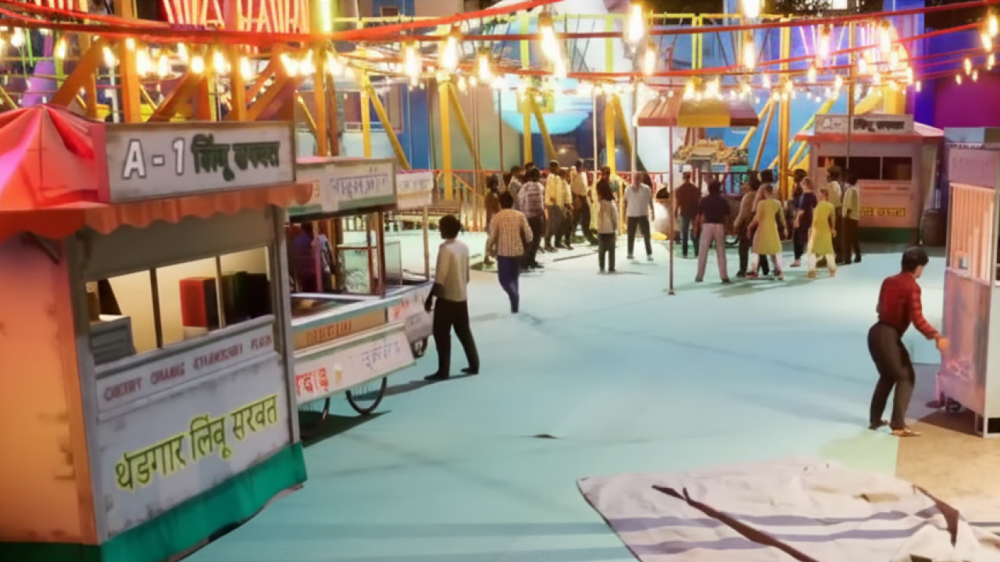
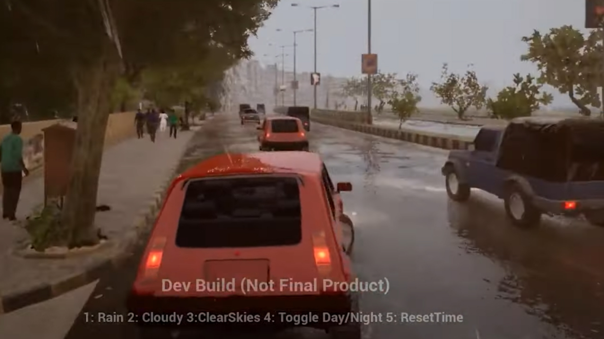
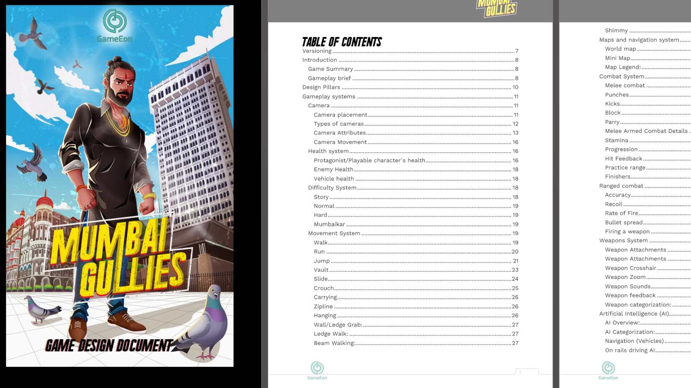
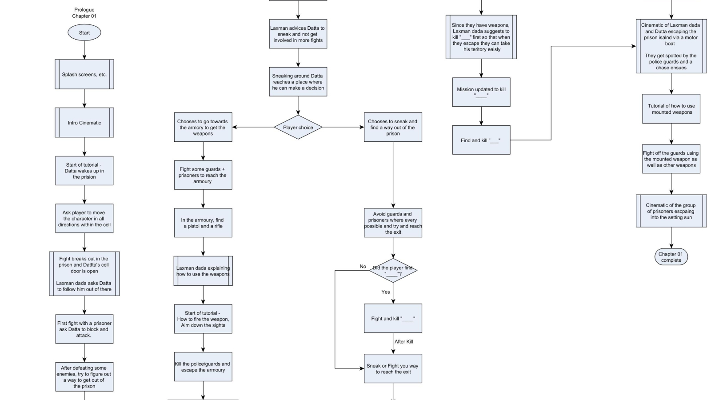
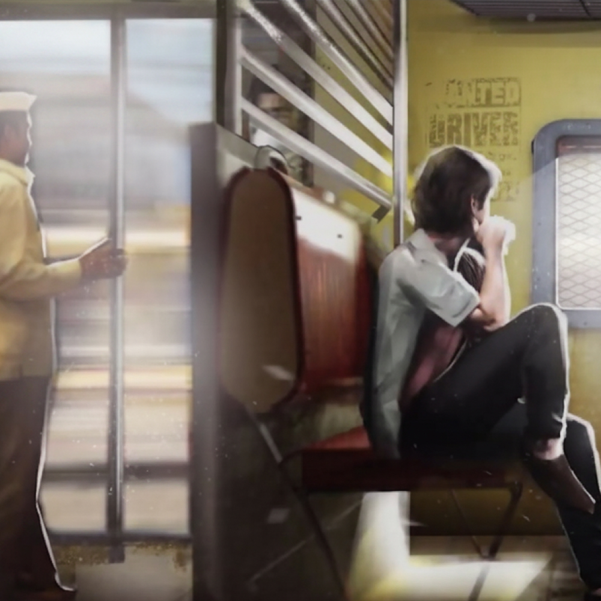
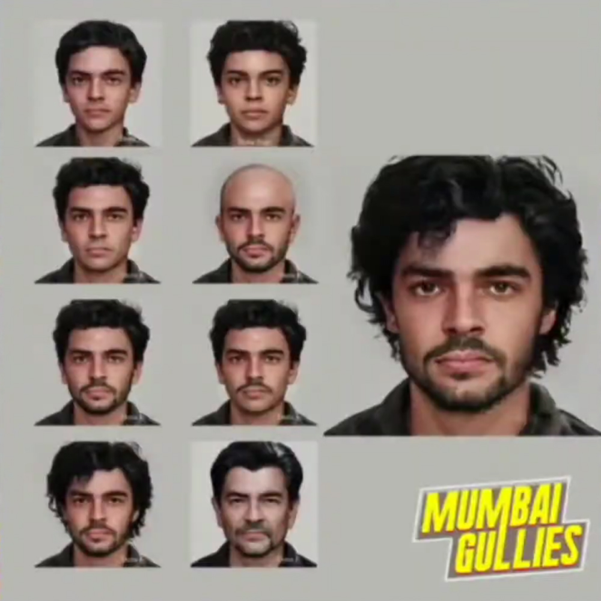
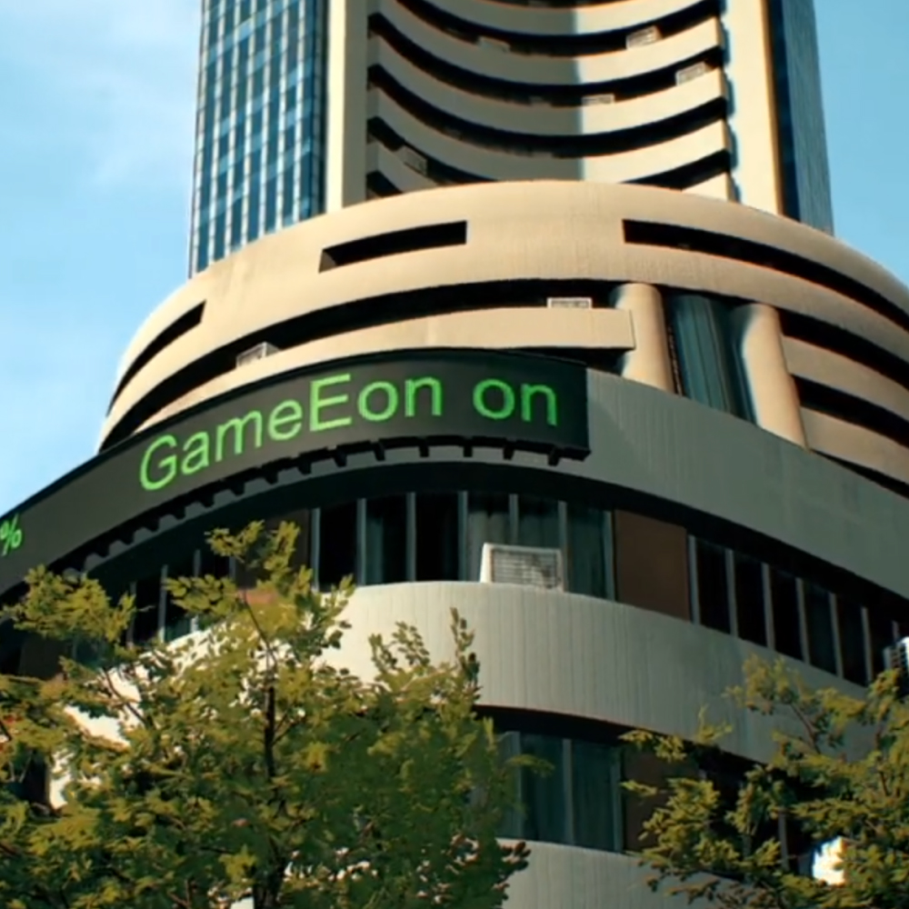

Case Study 01
India's first open-world third-person shooter for PC. A GTA-scale action game rooted in the streets, culture, and language of Mumbai, designed to play just as fully in Hindi as in English.

Mumbai Gullies was an ambitious PC title in the spirit of GTA. Open world, narrative driven, and heavy on gunplay, but rooted entirely in the culture, streets, and energy of Mumbai. We designed it to be played in full in both English and Hindi, with the same content and the same features in each. Nobody had really tried this in the Indian market before.
The game was in pre-production and systems design while I was on it. Because there was no existing reference for an Indian open-world shooter at this scale, every decision had to be reasoned out from first principles.
"This wasn't just a game set in India. It was built to feel like India, both for players who grew up in Mumbai and for players seeing it for the first time."



I joined GameEon as a consultant and led design through the project's early, foundational stage. I reported directly to Nikhil Malankar, the studio owner, which gave me real creative authority and, just as importantly, full accountability for the direction we set.
In the early days there was no design team beneath me. I was the single source of design truth for a cross-functional team that spanned production, art, and story, and anything that touched systems, player flow, or how the narrative fit together came through me. As the project grew, other designers joined and worked alongside me, and a big part of my role became guiding their work and keeping the design coherent across the team.
The main thing I produced was the foundational Game Design Document, the source of truth the whole team would build against. The GDD was really just the container, though. What I was actually defining were the systems meant to shape how the game would play.
One honest note before you read on: I led design through the project's early, foundational stage. A lot of these systems were defined on paper and never fully playtested or polished, so what follows is the thinking and the structure, not finished, shipped gameplay or tuned interaction patterns.

A thorough design document covering the vision, tone, core mechanics, player journey, systems overview, and feature specs. I wrote it to serve both creative direction and technical implementation, structured so engineers, artists, and producers could each find what they needed without wading through the rest.
I defined how the player was meant to move through and interact with Mumbai's open world: a third-person control scheme for keyboard, mouse, and gamepad, the intended approach to cover and gunplay, NPC behaviour triggers, environmental interactions, and the logic that would keep the city feeling alive rather than static. Traffic, crowds, and reactive street life were all part of the plan. Much of this lived as design intent, since the project moved on before these systems were built out and tuned.
I created the structural framework for mission types, progression gates, and narrative hooks, and worked out the hierarchy between main story missions, side content, and ambient events. The goal was simple: always give players something meaningful to do, without overwhelming them or watering down the main story.

I designed the economy from scratch: currency types, how resources flow, progression pacing, and reward structures. The trick was balancing a coherent progression loop against the realities of the Indian market, where player expectations and spending habits look quite different from Western markets.
I designed the game for genuine bilingual delivery, not a translation layer bolted onto an English product. That meant decisions across UI layout (so text could expand and contract for each script), voice line integration, dialogue framing that actually lands culturally, and handling content that simply doesn't carry the same meaning across both languages. The intent was for both versions to be treated as the real thing.
On a project this size, the game director's job is less about generating ideas and more about keeping everyone building toward the same picture. I worked closely with production, art, and story every day to surface blockers early, settle conflicts between disciplines, and keep design decisions in step with what each team actually needed to move forward.



A teaser trailer went out publicly, which gave Mumbai Gullies a real footprint and signalled just how big the ambition was. The response from the Indian gaming community confirmed there was genuine appetite for a culturally grounded open-world title. The teaser shows the visual identity and tone we established during my time on the project.